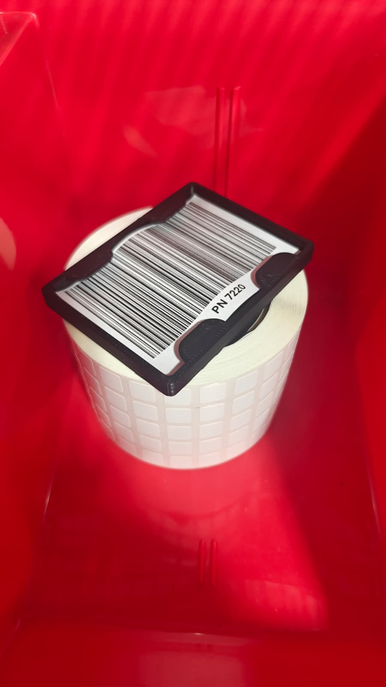
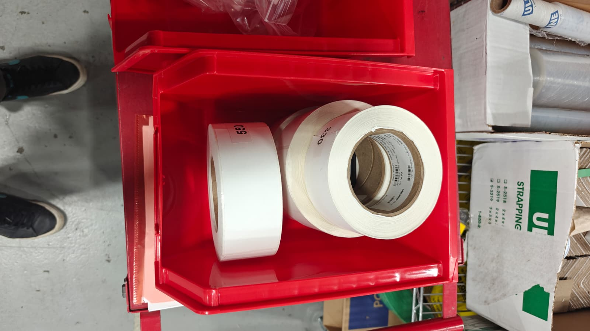
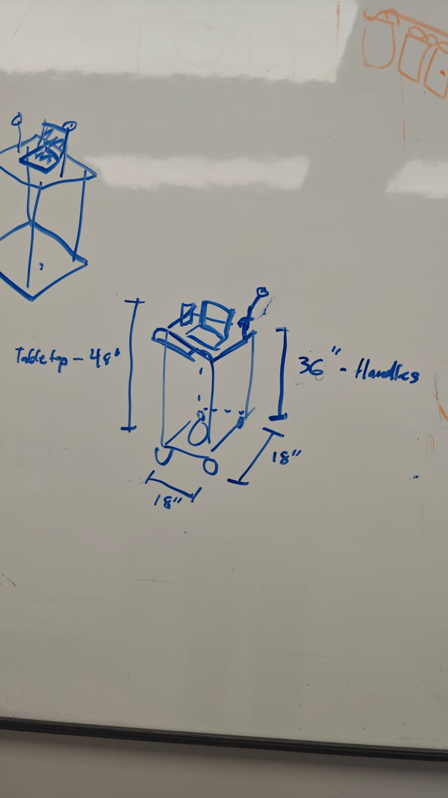

Innofiber
KPO Engineering Intern, [ADD START MONTH YEAR] to present
My role
At Innofiber, I'm the Kaizen Promotion Office (KPO) Engineering Intern. I analyze problems in and around our flow lines and develop solutions that cut waste and cycle time so production can keep pace with takt time.
Innofiber manufactures fiber optic cables for industrial and medical applications and works with OEMs to develop their cables and determine how manufacturable they are. Part of my role is designing and building workstations and carts out of Creform/FlexPipe, a modular pipe-and-joint system, so each one fits the ergonomics of the operator who uses it.
E&O Analysis Tool
Finding thousands of unused parts so they stop getting in the way of kitting.
What
Innofiber had no way to tell whether a part would ever be consumed again once the assemblies (bills of materials) that used it were completed. Those excess and obsolete (E&O) parts stayed in active stock, where they could be pulled by mistake during assembly and kitting. I was tasked with finding them and getting them out of the way.
How
I started with almost no knowledge of how Fishbowl, our inventory system, stores its data, or of SQL, the language its Data feature uses to query it. After teaching myself the basics, I wrote queries to pull sales order history, active and inactive BOMs, and every inventoried part, each formatted for Excel. I then wrote a VBA macro that combines those exports and flags every part that hasn't been consumed through a sales order within a chosen range of years.
- QuerySQL pulls sales orders, BOMs, and parts from Fishbowl
- ExportEach result is formatted as an Excel sheet
- CombineA VBA macro merges the sheets and checks consumption
- FlagParts with no sales-order use in the chosen years are listed
[ADD one problem you ran into, e.g. messy or duplicate data, matching up the different exports, or deciding what counts as "dead", and how you solved it.]
Why
The tool has flagged more than 2,000 parts that meet the criteria, and about 21% of them have already been relocated [ADD where, e.g. out of active kitting areas], reducing the dead inventory that complicates kitting. [ADD next steps, e.g. working through the rest of the list.]
Skills used: SQL, Fishbowl Data queries, Excel, VBA, data analysis, and learning a new system quickly.
Shipping Label Kanban System
A physical trigger that tells procurement when shipping is down to its last roll, with no extra steps for operators.
What
Shipping applies a label to the packaging of every individual assembly that leaves Innofiber, so these labels are bought and used in bulk. When the labels were removed from the bills of materials, their consumption stopped being tracked anywhere. Procurement had no signal that labels were running low, so shipping would run out before anyone knew to reorder, and requests arrived as last-minute complaints.
How
I designed and built a fixture that fits the inner diameter of a label roll and carries a QR code, then placed it in the last roll on the shelf. To use that roll, an operator has to remove the fixture first. Scanning codes is already a routine part of the shipping role, so operators scan it out of habit rather than as an extra task. The scan fills out the company-wide part request form, built by our automation engineer, and a Microsoft Power Automate flow I set up routes the request to procurement with an email to the purchasing department.


[ADD one problem you ran into, e.g. fixture fit or redesigns, or getting operators to scan, and how you solved it.]
Why
Since the system went live, shipping hasn't had a single label shortage or complaint. Because these labels go on every assembly we ship, keeping them in stock keeps shipments moving. [ADD a number if you have one, e.g. how often shortages happened before or how many rolls you go through.]
Skills used: Lean manufacturing (kanban), fixture design and rapid prototyping, Microsoft Power Automate, designing around operator habits, and coordinating between shipping and procurement.
Accomplishment Walk
[ADD a one-line summary of this project]

[ADD a short description of this project when you're ready.]